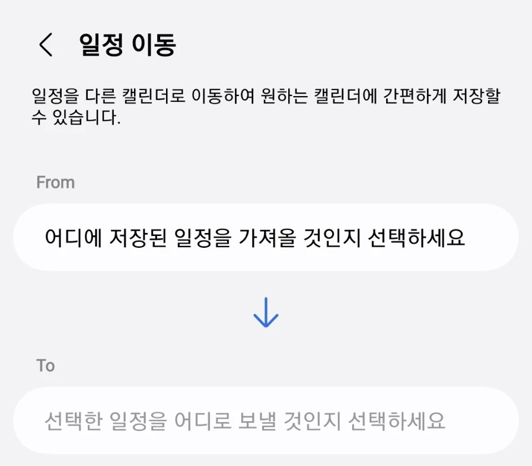
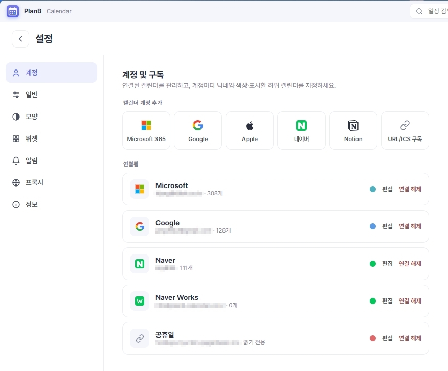
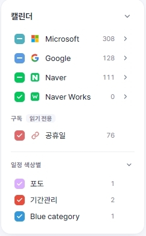

삼성(갤럭시) 캘린더를 PC에서 보는 법 — 왜 바로 연결이 안 되나
- 삼성 캘린더는 공식 PC 버전이 없음. 그리고 다른 앱이 직접 연결할 통로도 열려 있지 않음.
- 이유는 세 가지가 전부 없기 때문 — 공개 API · CalDAV · ICS 구독 주소.
- 그래서 해법은 「동기화를 켜는 것」이 아니라 일정이 사는 집을 구글 계정으로 옮기는 것.
- 옮긴 뒤 PC에서 그 구글 계정을 캘린더 앱에 연결하면 양방향으로 보고 고칠 수 있음.
갤럭시를 쓰면 일정은 자연스럽게 삼성 캘린더에 쌓임. 그런데 컴퓨터 앞에 앉으면 그 일정을 볼 방법이 없음. 삼성 커뮤니티에 「삼성 캘린더 PC 버전을 만들어 달라」는 글이 꾸준히 올라오는 것도 그래서임.
이 글은 두 가지를 다룸. 왜 PC에서 안 보이는지, 그리고 지금 할 수 있는 방법은 무엇인지.
삼성 캘린더에 PC 버전이 있나?
없음. 삼성 캘린더는 갤럭시 스마트폰·태블릿용 앱이고, Windows나 Mac용 공식 프로그램은 제공되지 않음. 웹으로 들어가 보는 방법도 안내되어 있지 않음.
그럼 다른 캘린더 앱에 연결하면 되지 않나?
이 부분이 오해가 많은 곳임. 「연동되는 앱을 찾으면 된다」가 아니라, 연결에 쓸 통로가 없음. 캘린더 서비스를 외부 앱에 붙이는 길은 보통 세 가지인데 삼성은 셋 다 해당되지 않음.
| 연결 방식 | 어떤 서비스가 쓰나 | 삼성 캘린더 |
|---|---|---|
| 공개 API | 구글, Microsoft 365, Notion | 외부에 공개된 캘린더 API가 없음 |
| CalDAV 표준 | 네이버, 네이버웍스, Apple iCloud | 지원하지 않음. 커뮤니티에 지원 요청이 올라와 있는 상태 |
| ICS 구독 주소 | 구글, Outlook (보기 전용) | 자기 일정을 구독 주소로 내보내는 기능이 없음 |
세 번째가 특히 아쉬운 지점임. 보기 전용이라도 구독 주소 하나만 있으면 어느 캘린더 앱이든 바로 띄울 수 있는데, 삼성 캘린더에는 그 주소를 만드는 기능이 없음. 일정 공유는 같은 계정으로 로그인한 기기나 초대받은 사람에게만 열림.
정리하면, 어떤 캘린더 앱이 「삼성 캘린더를 지원한다」고 한다면 대개 구글 계정을 경유하는 방법을 말하는 것. 삼성 계정 캘린더에 직접 접속하는 것이 아님.
해법 — 일정이 사는 집을 구글로 옮긴다
삼성 캘린더 앱은 구글 계정을 등록해 쓸 수 있음. 즉 삼성 캘린더 앱은 그대로 쓰면서, 일정만 구글 계정에 저장하게 바꾸는 것. 그러면 폰에서는 지금까지와 똑같이 보이고, 그 일정이 PC에서도 보임.
한 가지 먼저 알아 둘 것 — 이건 삼성 계정과 구글을 상시로 맞춰 주는 동기화가 아님. 일정이 저장되는 위치를 바꾸는 작업임. 그래서 순서가 중요함.
0단계 — 지금 내 일정이 어디 저장돼 있는지 확인
삼성 캘린더에서 일정을 만들 때 저장할 캘린더를 고르게 되어 있고, 선택지는 보통 「내 캘린더」 · 삼성 계정 · 구글 계정임. 삼성 공식 안내에 따르면 「내 캘린더」에 저장한 일정은 휴대전화에만 저장되어 다른 기기와 공유되지 않음. PC에서 안 보이는 일정이 있다면 여기 들어 있을 가능성이 큼.
일정 하나를 열어 저장 위치를 확인해 보면 지금 상태를 알 수 있음.
1단계 — 앞으로 만드는 일정을 구글 계정에 저장
새 일정을 만들 때 저장 캘린더를 구글 계정으로 고름. 이것만 해도 오늘 이후의 일정은 PC에서 보이기 시작함. 급하면 여기까지만 하고 나머지는 나중에 해도 됨.
2단계 — 이미 있는 일정 옮기기
지난 일정까지 PC에서 보려면 기존 일정을 구글로 옮겨야 함. 두 가지 방법이 있음.
- 한 건씩 — 일정을 열어 편집에서 저장 위치를 구글 계정으로 바꿈. 몇 개뿐이라면 이게 가장 확실함
- 묶어서 — 삼성 캘린더에 「일정 이동」 메뉴가 있음. 캘린더 관리 화면의 더보기(점 세 개)에서 열면 From(어디에 저장된 일정을 가져올지)과 To(어디로 보낼지)를 고르는 화면이 나옴

메뉴 위치와 이름은 One UI 버전에 따라 다를 수 있음. 그리고 옮긴 것을 한 번에 되돌리는 메뉴는 없으므로, 먼저 일정 두세 개로 시험한 뒤 전체를 옮기는 것을 권함. 중요한 일정이 많다면 옮기기 전에 폰에서 백업을 해 두면 마음이 편함.
3단계 — PC에서 구글 계정을 캘린더 앱에 연결
여기까지 했으면 PC 쪽은 간단함. PlanB Calendar를 설치하고 설정 > 계정에서 구글 계정을 연결하면, 폰에서 넣은 일정이 그대로 올라옴.

옮기고 나면 무엇이 되나
- 양방향 — PC에서 만들거나 고친 일정이 구글 원본에 반영되고, 폰의 삼성 캘린더에도 따라 들어옴
- 다른 계정과 한 화면 — 회사 Microsoft 365, 개인 네이버 캘린더를 같이 연결해 색으로 구분해 봄
- 바탕화면 위젯 — 앱 창을 열지 않고 바탕화면에서 바로 확인
- PC 알림 — 브라우저를 켜 두지 않아도 일정 알림이 Windows 알림으로 뜸

주의할 것
- 삼성 계정 캘린더는 직접 연결되지 않음. 위 방법은 구글 계정을 경유하는 것이고, 삼성 계정에 남겨 둔 일정은 PC에서 보이지 않음
- 상시 양방향 동기화가 아님. 삼성 계정과 구글을 계속 맞춰 주는 기능은 없음. 저장 위치를 구글로 바꾸는 것이 핵심
- 폰에서 보이는 구글 일정에는 기간 제한이 있을 수 있음. 삼성 안내에 따르면 현재를 기준으로 과거·미래 각 1년 정도만 폰에 표시될 수 있음. 더 오래된 일정은 PC나 웹에서 확인하면 됨
자주 묻는 질문
없음. 갤럭시 스마트폰·태블릿용 앱만 있고 Windows·Mac용 공식 프로그램은 제공되지 않음.
현재는 어려움. 삼성은 외부에 공개한 캘린더 API가 없고, CalDAV 표준도 지원하지 않으며, 일정을 ICS 구독 주소로 내보내는 기능도 없음. 연결에 쓸 통로 자체가 열려 있지 않음.
연결하지 않음. 위에 적은 대로 통로가 없어서, 구글 계정을 경유하는 방법만 가능함. 삼성이 CalDAV나 구독 주소를 지원하게 되면 연결할 수 있음.
삼성 캘린더의 캘린더 관리에서 해당 구글 캘린더가 꺼져 있으면 그 일정이 보이지 않음. 목록에서 켜면 다시 보임.
갤럭시 일정, PC에서 바로 써보기
PlanB Calendar는 무료 Windows 데스크탑 캘린더 앱임. 구글·네이버·Microsoft 365·애플 일정을 한곳에서.
Windows용 다운로드